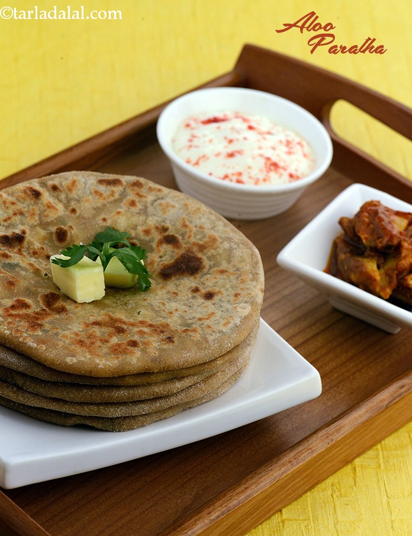

Aloo Paratha

Description
A tasty Punjabi breakfast recipe, consisting of a paratha (a type of South Asian flat bread) stuffed with a mix of mashed potatoes, onions, green chillies and Indian spices.
Ingredients
For the Dough
- 2 1/4 cups whole wheat flour (gehun ka atta)
- 2 tbsp melted ghee
- salt to taste
For the Aloo Paratha Stuffing
- 2 1/2 cups boiled, peeled and mashed potatoes
- 2 tsp melted ghee
- 1 tsp cumin seeds (jeera)
- 1/2 cup finely chopped onions
- 1 tbsp finely chopped green chillies
- salt to taste
- 1/2 tsp chilli powder
- 2 tbsp finely chopped coriander (dhania)
- 2 tsp dried mango powder (amchur)
Other Ingredients for the Aloo Paratha
- whole wheat flour (gehun ka atta) for rolling
- ghee for cooking and greasing
For Serving with the Aloo Paratha
Steps
For the Dough
- Combine the whole wheat flour, ghee and salt in a bowl and mix well.
- Add enough water and knead into a semi-stiff dough. Keep aside.
For the Aloo Paratha Stuffing
- Heat the ghee in a broad non-stick pan and add the cumin seeds.
- When the seeds crackle, add the onions and sauté on a medium flame for 1 to 2 minutes.
- Add the green chillies, mix well and sauté on a medium flame for 1 minute.
- Add the potatoes, salt, chilli powder, coriander, dry mango powder, mix well and cook on a medium flame for 1 to 2 minutes, while stirring continuously.
- Divide the stuffing into 12 equal portions and keep aside.
How to Proceed
- To make aloo paratha, divide the dough into 12 equal portions and roll a portion of the dough into a circle of 100 mm. (4") diameter circle.
- Place a little stuffing in the centre of the circle.
- Bring together all the sides in the centre and seal tightly.
- Roll again into a circle of 150 mm. (6") diameter circle with a little flour.
- Heat a non-stick tava (griddle) and cook the paratha using a little ghee until golden brown spots appear on both the sides.
- Repeat with the remaining dough and stuffing to make 11 more aloo parathas.
- Serve the aloo parathas immediately with fresh curds.
Source